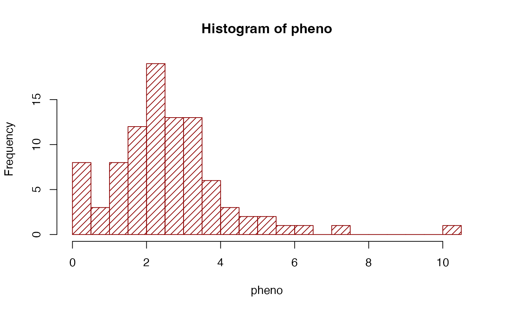
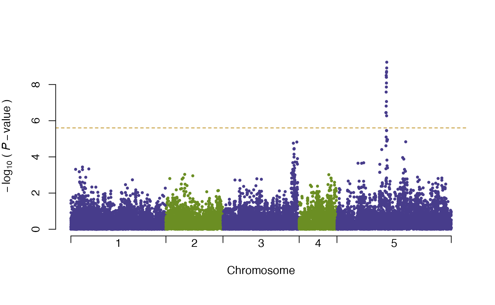

To use the vGWAS package, of course, an R environment is required. Visit:
and install R for the operating system.
Start R and in the R console, type the following command to install the package dependencies first:
#install.packages("devtools")
#install.packages("hglm")
#install.packages("dglm")
#library(devtools)
#install_github("kullrich/vGWAS", build_vignettes = TRUE, dependencies = FALSE)Now the package is installed in the R library.
Load the library in the R console, and open this vignette with the command:
library(vGWAS) #vignette("vGWAS")
Six main functions in the package are ready to use:
Run the following commands to load the example data:
pheno is a numeric vector of the simulated phenotypic values. By running:
hist(pheno, breaks = 30, density = 15, col = "darkred")

The command:
table(chr) #> chr #> 1 2 3 4 5 #> 5000 3000 4000 2000 6000
shows exactly the number of markers on each of the five simulated chromosomes.
Now, the objects loaded in R are ready for a vGWA scan, which can be done using the single command:
vgwa <- vGWAS(phenotype = pheno, geno.matrix = geno, marker.map = map, chr.index = chr, pB = FALSE) #vgwa <- vGWAS(phenotype = pheno, geno.matrix = geno, marker.map = map, chr.index = chr, pB = TRUE)
A progress bar will indicate the progress of the scan if pB is set to TRUE.
When the scan is finished, all the output statistics will be returned as a list into the object vgwa, which belongs to the class ‘vGWAS’. Any object that has a structure belonging to class ‘vGWAS’ can be directly passed into S3 method function plot. For instance, simply run the following command, we can plot the results in vgwa:
plot(vgwa) #> nominal significance threshold with Bonferroni correction for 20000 tests are calculated.
which produces Figure 2. There is a clear peak above the Bonferroni corrected threshold (dashed orange line).
Regarding the marker that gave the highest score, the heritability explained by the mean and variance can be split and calculated via:
vGWAS.variance(phenotype = pheno, marker.genotype = geno[,vgwa$p.value == min(vgwa$p.value)]) #> variance explained by the mean part of model: #> 4.2 % #> variance explained by the variance part of model: #> 23.06 % #> variance explained in total: #> 27.26 % #> $vm #> C #> 0.1026317 #> #> $vv #> C #> 0.5628937 #> #> $ve #> C #> 1.77584 #> #> $vp #> C #> 2.441366
The output can also be stored if assigning the function call to an object.
To correct for population confounding, the package applies the method HEVA (h-likelihood-based efficient variance association), described in the reference paper of the package.
One may input pre-calculated kinship matrix, e.g. IBD or IBS matrix, and call vGWAS with heva = TRUE, kinship = calculated.kinship.
Instead, the inbuilt function vGWAS.heva automatically constructs a simple genomic kinship from the genotype data. Simply, runing:
geno.coding <- matrix(0, nrow(geno), ncol(geno)) #pb <- txtProgressBar(style = 3) for (j in 1:ncol(geno)) { geno.coding[,j] <- as.numeric(geno[,j] == names(table(geno[,j]))[1])*2 - 1 #setTxtProgressBar(pb, j/ncol(geno)) } image(tcrossprod(geno.coding))

creates a coded genotype matrix (contains -1 and 1 in this example) shown in Figure 3.
vGWAS.heva provides correction for phenotype and also visualization of population stratification. When calling vGWAS.heva or vGWAS as:
#vgwa2 <- vGWAS(phenotype = pheno, geno.matrix = geno.coding, heva = TRUE, marker.map = map, chr.index = chr) vgwa2 <- vGWAS.gc(vgwa)
Figure 4 is generated simultaneously with the calculation to visualize the stratification in the population via the first two principle components of the kinship matrix.
Plotting the this object as follows will generate a new vGWAS plot in Figure 5. In this example, the difference between the vGWA results with and without HEVA correction is small, but they might differ a lot for some datasets (See the reference paper in the package).
plot(vgwa2) #> nominal significance threshold with Bonferroni correction for 20000 tests are calculated.
The package source and further development information are on the R-Forge project page: https://r-forge.r-project.org/projects/vgwas/
A reimplementation of vGWAS as a devtool package can be found here: https://github.com/kullrich/vGWAS